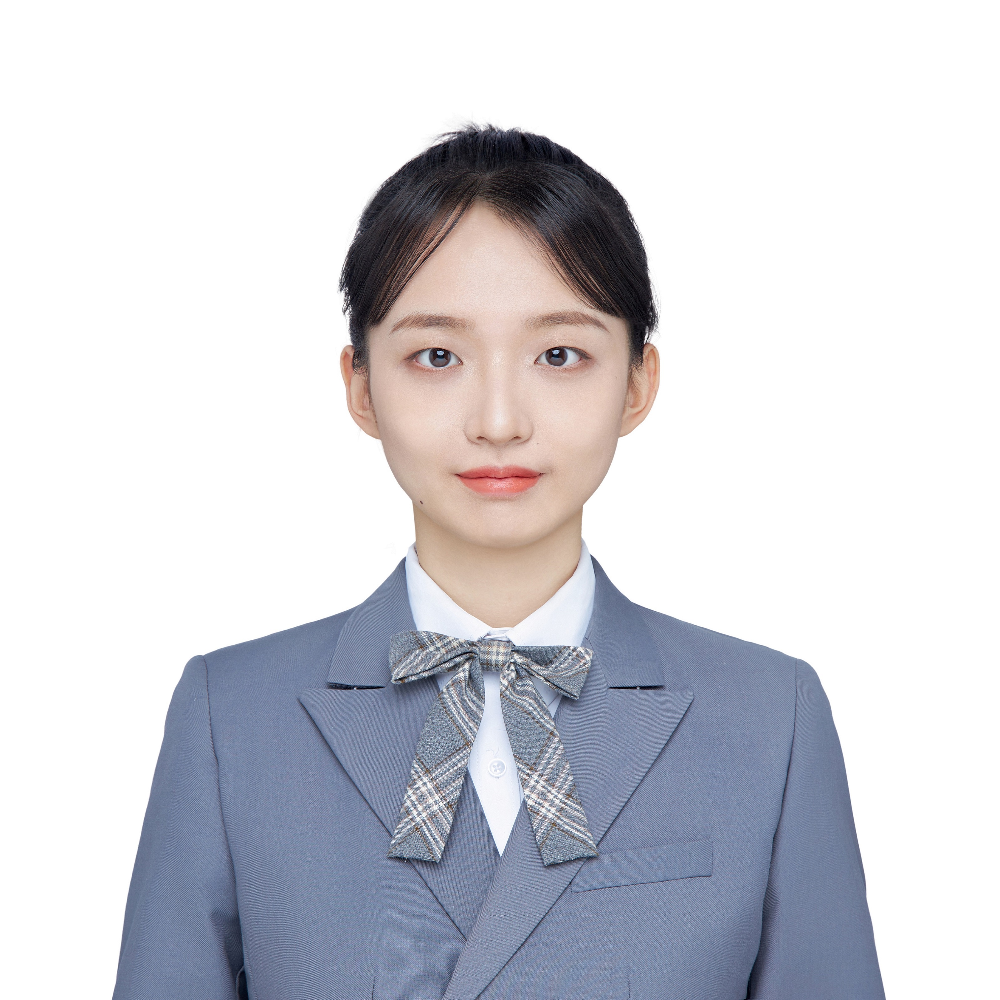
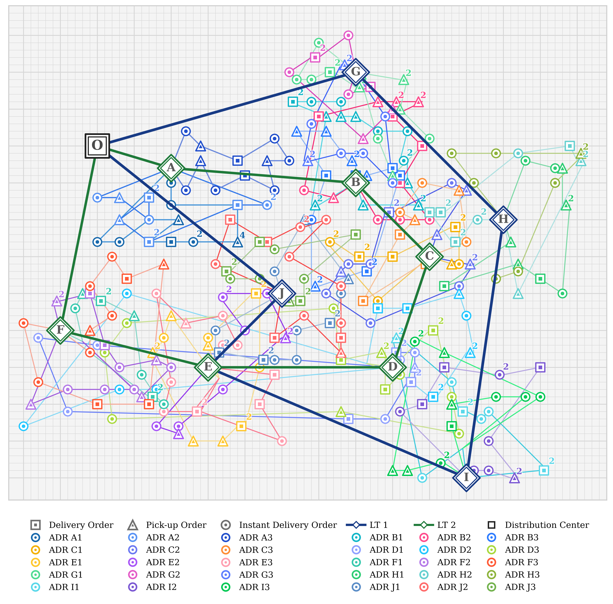
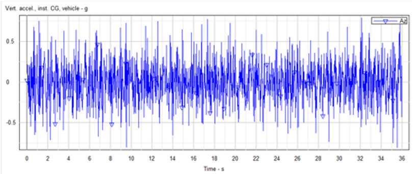
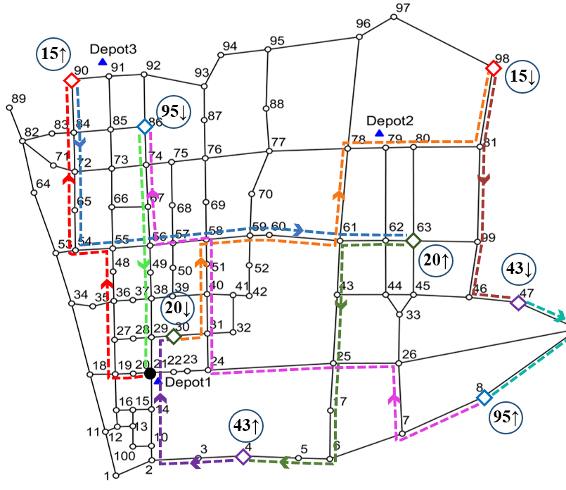
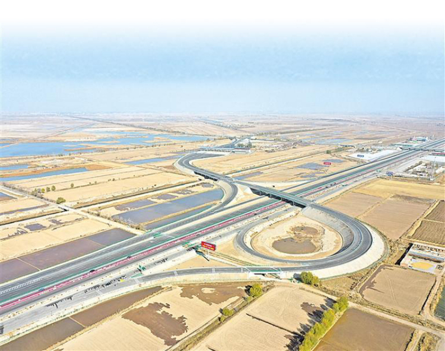
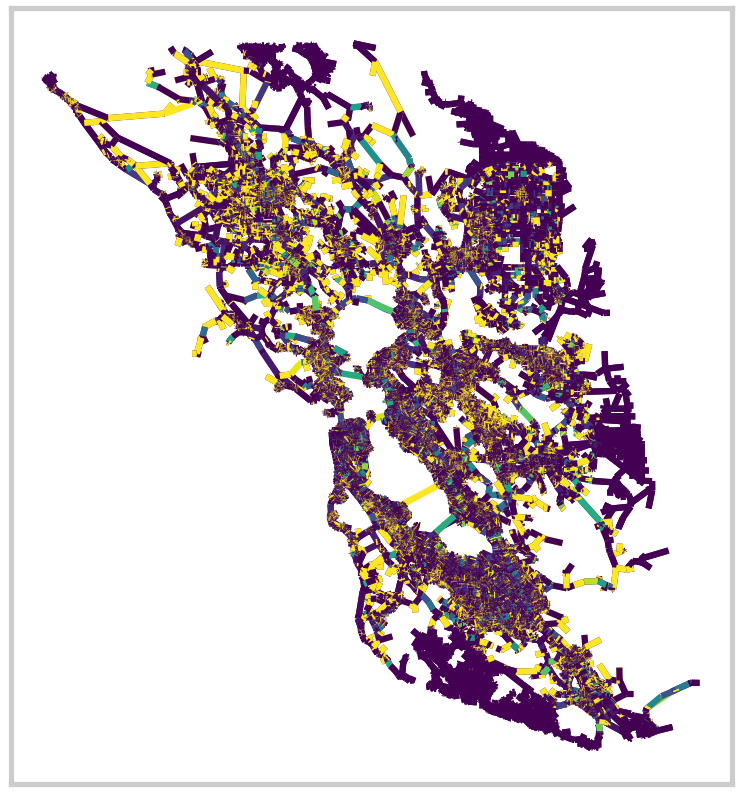

Hao Zheng
M.S., Civil Engineering, Tsinghua University, 2025
Research Assistant, Beijing Jiaotong University
Associate Member, PIARC Technical Committee 1.1, World Road Association
News
Publications
Journal & Conference Papers

KNOWCAST: Domain-knowledge-integrated deep learning for metro OD forecasting and path flow estimation
Transportation Research Part C: Emerging Technologies, Volume 189, 2026, Article 105710. ISSN 0968-090X. DOI: 10.1016/j.trc.2026.105710.
This work integrates trip generation, trip distribution, and traffic assignment knowledge into a sequence-to-sequence framework for joint metro OD forecasting and path-flow estimation.

Integrated Routing of Trucks and Robots for Multi-Modal Urban Express Logistics.
Transportation Research Record. Accepted for publication. Presented at the TRB 105th Annual Meeting, 2026.
This paper studies integrated truck-and-robot routing for urban express logistics using a space-time network formulation and branch-and-price optimization.

An Operational Scheduling Framework for Pavement Maintenance Activities: From Rule-Based Task Generation to Branch-and-Price-Based Route Optimization
International Journal of Pavement Engineering. Accepted for publication.
This paper links rule-based pavement maintenance task generation with branch-and-price-based vehicle routing for operational maintenance scheduling.

Vehicle Vibration Modeling via Road Profile Reconstruction and Simulation: Coupled Analysis of IRI, Speed, and Ride Comfort for Driving Assistance
Road Materials and Pavement Design, 2025

Improving Synchronization in High-Speed Railway and Air Intermodality: Integrated Train Timetable Rescheduling and Passenger Flow Forecasting.
IEEE Transactions on Intelligent Transportation Systems, 2022


Dynamic Planning Model and Solution Algorithm for the Demand-responsive Customized Bus Route.
World Transport Convention (WTC) Proceedings, 2021
Book

Green Development Paths and Strategies for Comprehensive Transportation in Ningxia
Book | ISBN: 9787114195624
Manuscripts Under Review and Working Papers
Under Review

Public-Data-Assisted Staged Transfer Learning for Local Pavement Condition Prediction across Shared and Local Indicators
Submitted to International Journal of Pavement Engineering.
This manuscript develops a public-data-assisted staged transfer-learning framework that uses shared public-data indicators, IRI and RD, to support local PCI prediction under limited local records and heterogeneous indicator systems.
In Preparation

DISCERN: Discrete Choice with Embedded Representation Networks.
Manuscript in preparation.
This manuscript embeds theory-driven discrete choice modeling within a neural representation framework for behavioral-parameter calibration using large-scale macroscopic data.

A Bilevel Optimization Framework for Collaborative Strategies between Infrastructure and Mobility Service Providers.
Manuscript in preparation.
This manuscript develops a bilevel optimization framework coupled with GPU-based microscopic traffic simulation to study collaborative strategies between infrastructure and mobility service providers.
Professional Experience & Appointments
Research Assistant 07/2025 – Present
Beijing Jiaotong University
- Conduct research in transportation systems, optimization, and machine learning, with an emphasis on transportation network modeling and computational methods.
Associate Member, PIARC Technical Committee 1.1 04/2026 – Present
World Road Association (PIARC) · Professional Appointment
- Serve on Technical Committee 1.1 and participate in international activities concerning transport planning, administration, and the future development of transport agencies.
- Contribute to the Working Group 1 international survey report through survey analysis, evidence synthesis, and drafting, including review of response patterns across agencies, countries, and LMIC contexts.
Research
Computational Benchmarking of Scalable Traffic Assignment on Open Transportation Networks 2025 – Present
Research Collaborator with Prof. Xuesong Zhou
- Built an experimental pipeline converting TNTP-style benchmark networks into unified link–demand formats and generating path sets for path-based traffic assignment.
- Evaluated path-compression strategies across compression ratios and demand levels, comparing solver time, objective gaps, and link-flow fit against baseline solutions.
Bilevel Optimization Framework for Tolling Strategy in Autonomous Networks 06/2025 – 10/2025
MIT-UF-NEU Summer Research Camp | Supervisor: Prof. Jinhua Zhao, MIT; Mentor: Dr. Xuan Jiang
- Designed an end-to-end bilevel optimization workflow for tolling strategy design, modeling interactions between infrastructure operators and autonomous vehicle fleets.
- Implemented the Python-based upper-level optimization loop and re-engineered a C++/CUDA microscopic traffic simulator to support toll-responsive agent behavior.


Intelligent Road Asset Management: Prediction and Decision-Support Models 2023 – 2025
Digital Transportation Management Platform | Supervisor: Prof. Runhua Guo
- Developed core prediction and maintenance decision modules for a digital road asset management platform, integrating pavement condition forecasting with maintenance strategy optimization.
- Built GRU/attention-based pavement performance prediction models using climate, traffic, material, and LTPP data, and implemented budget- and performance-constrained maintenance decision models.
Strategic Framework for Green Transportation & Infrastructure Management (Researcher & Contributing Author) 2022 – 2024
Project: Coordinating Ecological Protection with Carbon Peaking and Neutrality Goals in the Yellow River Basin | Supervisor: Prof. Runhua Guo
- Researched and formulated technical roadmaps for the resource utilization of solid waste in highway construction, focusing on recycled asphalt and industrial by-products.
- Analyzed infrastructure lifecycle management strategies, including intelligent inspection methods, pavement performance prediction, and maintenance decision-making models.
- Under the primary guidance of Prof. Guo, authored two key chapters (Chapter 3: Green Construction; Chapter 4: Green Operations & Maintenance) of the project's resulting book, published by the China Communications Press.
Comparative Analysis of Road Design Standards for Belt and Road Projects (Research Analyst) 2023
Project: Differentiated Research on Engineering Projects along the Belt and Road: Sri Lanka | Supervisor: Prof. Runhua Guo
- Conducted a comparative analysis of highway design standards between China and key Belt and Road countries (e.g., Sri Lanka, Pakistan) to provide technical guidance for international projects.
- Conducted a comparative analysis of the standards for highway construction and acceptance between China and Sri Lanka, with a focus on asphalt pavement design philosophies, to formulate conversion methods and investigate universal acceptance criteria.
- Authored a technical report identifying critical differences in design parameters (e.g., standard axle loads, material specifications, reliability levels) to facilitate the adaptation of Chinese engineering practices abroad.
Customized Bus and Air–Rail Intermodal Optimization 2020 – 2022
National University Student Innovation & Entrepreneurship Development Program | Project Leader
- Led the development of a two-stage optimization framework for air–rail passenger transfers, combining high-speed rail timetable adjustment with customized bus route planning.
- Modeled the airport–station connection as a vehicle routing problem with time windows and transfers, and developed a hybrid ALNS–Tabu Search algorithm; the resulting software received a national software copyright.
Software
Software and code are continually updated on github.com/scholarhaozheng.
-
Pave-ML-Multi-Task Learning for Pavement Performance Indicators (Python) Initial release: 2025
-
Pavement Maintenance Decision-Making and a VRP Model for Execution (Python) Initial release: 2025
-
Dynamic Short-Term Prediction of Urban Rail Origin-Destination Flow (Python) Initial release: 2024
-
Hybrid Route Planning of Same-Day and Regular Deliveries in Space-Time Networks (C#) Initial release: 2023
-
A Multi-Type Customized Shuttle Bus Route Planning Software (MATLAB) Initial release: 2021
Honors & Recognition

Incoming Master's Student Representative and Speaker 08/2022
Tsinghua University 2022 Graduate Student Opening Ceremony
Represented the incoming master's student cohort and delivered an address titled “Go into the Wider World, and Learn through Firsthand Practice” at Tsinghua University's university-wide graduate student opening ceremony.
Selected Honors
- Second-Class Academic Excellence Scholarship, Tsinghua University 2024
- Outstanding Graduate of Beijing Municipality (Top 5%, 19/380) 2022
- Wu Fu–Zhenhua Transportation Education Excellent Student Award (Top 0.1%, 1/1520) 2021
- Zhan Tianyou Scholarship (Top 0.2%, 2/1520; Awarded Twice) 2020, 2021
- Zhixing Scholarship / President's Scholarship (Top 0.1%, 10/16800) 2020
Education
-
Tsinghua University, School of Civil Engineering, Master of Science 09/2022 - 06/2025
-
Beijing Jiaotong University, School of Traffic and Transportation, Bachelor of Engineering 09/2018 - 06/2022
Theses
-
Master Thesis: A Comprehensive Full-Process Planning Model for Pavement Performance Forecasting and Maintenance Strategy Implementation under Missing Data Conditions. 06/2025
-
Undergraduate Thesis: Customized Bus Planning Method Responding to Spatiotemporal Concentrated Demand in Super-peak. 06/2022